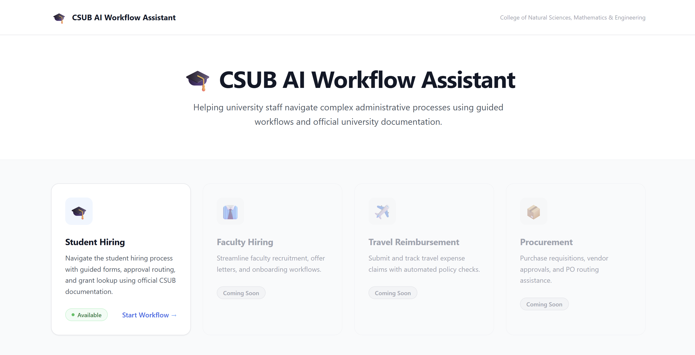
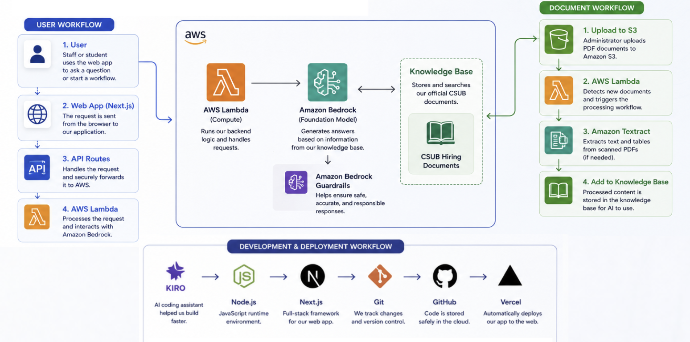
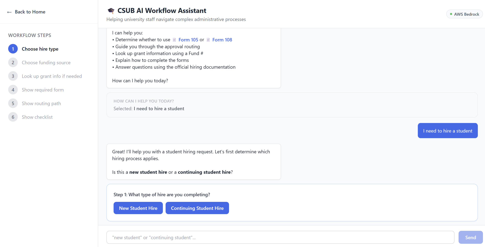
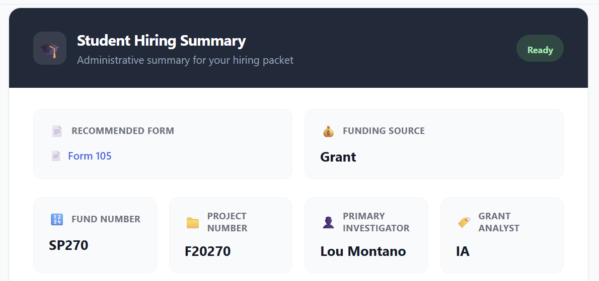

A cloud-based application created to help university staff find the right forms, follow student hiring procedures, and access policy and grant information in one place.

University hiring procedures can be difficult to navigate when forms, policies, approval routes, and grant information are spread across different documents and systems. Staff may need to search through several resources before knowing what to do next.
Through Cal Poly's AI Summer Camp, I worked on an application for California State University, Bakersfield that brings this information into one guided experience. The goal was to make the process easier to follow without sacrificing the accuracy required for administrative work.
One of the main decisions was determining which parts of the system should use AI and which parts should follow fixed rules. A chatbot alone would not be reliable enough for every administrative task.
Guided hiring workflows and grant lookups use structured application logic so the same inputs lead to consistent results. AI is used for questions that require searching policy documents and explaining information in plain language.
Walks users through the hire type, funding source, required forms, approval route, and next steps.
Helps users locate fund numbers, project numbers, principal investigators, and grant contacts.
Searches official university documents before generating an answer to a policy or procedure question.
Organizes the selected form, funding information, routing, and next steps into one clear summary.
Processes newly uploaded university documents so the assistant can use more current information.
Allows additional university workflows to be added without rebuilding the entire application.
The application separates the user interface, backend processing, AI services, and university documents. The Next.js interface collects the user's questions and selections, while AWS Lambda handles requests behind the scenes.
For policy questions, Amazon Bedrock searches a Knowledge Base built from official CSUB documents before generating a response. This keeps the assistant focused on university information instead of relying only on the model's general knowledge.

I wanted the application to feel more helpful than an empty chat box. The interface uses visible steps, structured choices, status indicators, and summaries so users can understand where they are in the process.
This was especially important for the hiring workflow because users need more than a final answer. They also need to understand which choices led to that result.

Users move through a step-by-step process to identify the hire type, funding source, required forms, and approval route.

The final screen brings the important hiring, funding, and routing information together in one place.
Policies and procedures change, so the assistant also needed a way to use updated university documents. The document pipeline was designed to process new files and add their information to the Knowledge Base.
An administrator uploads a new or revised university document to an Amazon S3 bucket.
The upload triggers an AWS Lambda function that begins processing the document.
Amazon Textract can extract text and structured information from scanned documents when needed.
The processed content is added to the Amazon Bedrock Knowledge Base so it can be used in future answers.
The biggest lesson from this project was that AI should not be used for every part of a system. Some tasks need flexible, document-based answers, while others need fixed rules and predictable results. Choosing between those approaches was just as important as building the application itself.
I also learned how much the user experience matters in a technical project. A system can have a strong backend, but it still needs to explain information clearly and help users feel confident about what to do next.